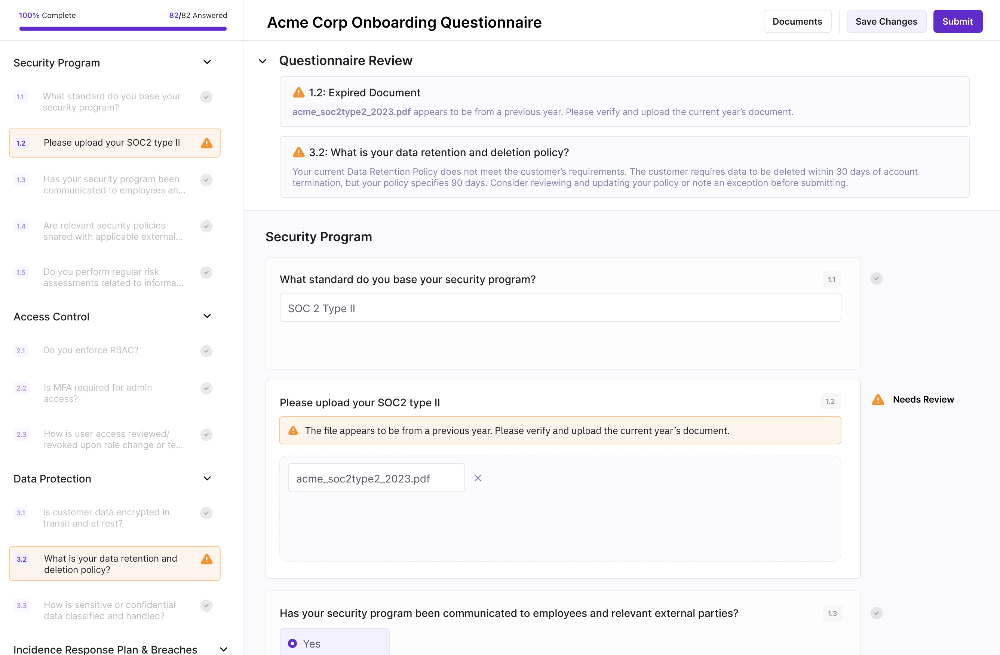
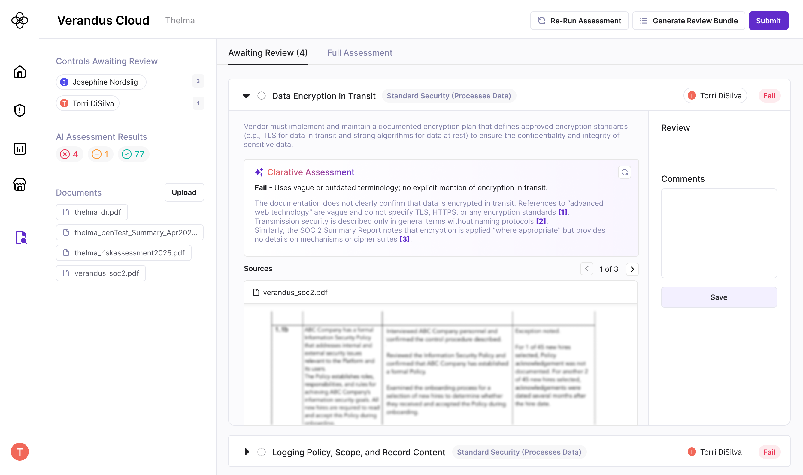

The problem
Third-Party Risk Managers (TPRMs) are under-resourced and overworked. Their core job — reviewing vendor documentation against internal controls — is entirely manual, repetitive, and slow. Worse, the business often sees them as a bottleneck rather than a safeguard. They have difficulty proving their value when they're mostly asked to "observe and report."
Vendors aren't happy either. They fill out lengthy questionnaires, often incorrectly, leading to repeated back-and-forth that delays onboarding for everyone.
The goal
Design an AI-forward due diligence workflow that streamlines evidence review, maintains compliance-ready accuracy, and — critically — helps TPRMs prove their value to the business.
Research
Our research kickoff timing serendipitously overlapped with a Security & Third-Party Risk summit, which I attended on behalf of Clarative. My colleague (Head of Eng.) and I conducted dozens of lightning interviews at the conference, and followed-up with deep-dive interviews and mock-up feedback sessions after the conference.
I also conducted structured landscape analysis of existing due diligence tools, reviewing documentation, practitioner sentiment, and public demo videos to understand where the category was falling short.
After synthesizing everything, I ran a cross-functional design thinking session with engineering and GTM: empathy mapping, "How Might We" statements, and translating insights into product features.

Screenshot from a team-wide empathy mapping workshop
Key insights
Two insights shaped the entire design direction. First: vendors and TPRMs essentially view each other as obstacles — the questionnaire process is adversarial when it should be collaborative. Second: TPRMs don't need more data, they need accurate data from vendors who just want to speed through and get this process over with.
What we built
Rather than sending every vendor the same 100+ question form, we used AI to reduce the question set based on existing public information and document extraction — asking only what was actually missing. For vendors, AI pre-filled responses from uploaded documentation and flagged gaps before submission, dramatically reducing back-and-forth. For TPRMs, an AI-assisted assessment review surfaced first-pass risk findings with source citations — a detail that turned out to be critical for building trust in AI-generated outputs.
Questionnaires, where vendors fill out usage information with AI-suggested responses from documentation extraction to speed up the process

Questionnaires Review, where Clarative AI runs vendor responses against TPRM standards to alert the vendor of quick-fix mistakes (wrong document uploaded) or where the provided information is not sufficient so that by the time they submit, it's their "best and final" response (reduced back-and-forth).

Assessment Review, where TPRMs review vendor evidence (documentation, questionnaire responses, etc.) and flag risk findings. They can see Clarative's first-pass assessment at whether a vendor's documentation/responses meet pass criteria, as well as source citations (something we learned is necessary to build AI trust).
Rollout
We ran weekly feedback sessions with early adopters and came prepared with clear goals for each meeting to ensure users could meaningfully test the product and fully experience the vision for how our tool would fit into their day-to-day processes.
Reflection
Implementing the Due Diligence module marked our first true deep dive into the third-party risk management space—an area I knew very little about going in. Gaining fluency in governance, risk, and compliance was honestly really challenging, but it pushed me to become much more rigorous in how I learn complex domains. What made the process rewarding was seeing that effort translate into meaningful customer impact. Hearing feedback like, “Clarative is worth it 100%… it gives you so much more time and scope to actually do the job properly,” and “It's a simple, graceful solution to quite a large problem,” feels really good and reinforced that we had succeeded in distilling a dense, high-stakes workflow into something intuitive and valuable.
Looking back, I see opportunities where I could have developed a broader view of the landscape beyond direct user interviews (e.g. incorporating more market & regulatory analysis). At the same time, this project marked a shift in how I show up as a designer. I moved beyond executing quickly on mocks to leading cross-functional alignment, advocating for a clear user-centered vision, and thinking more from a product and leadership perspective. It strengthened my ability to guide teams through ambiguity and align around thoughtful, high-impact solutions.